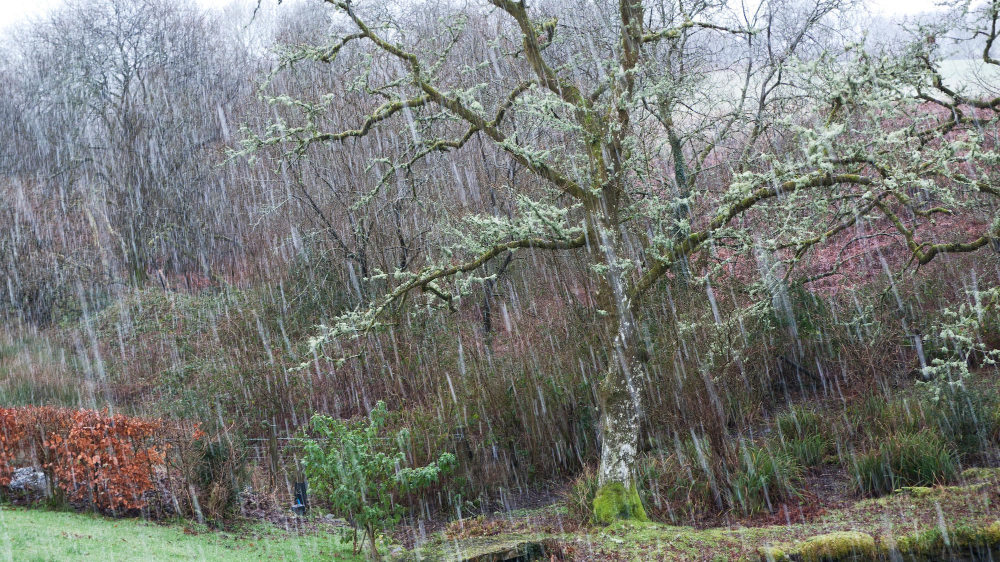
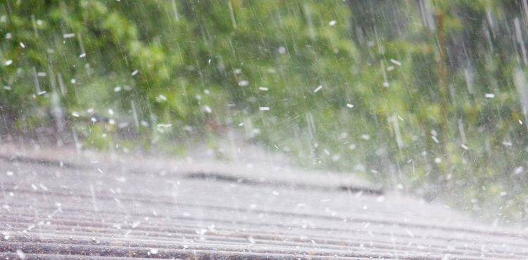
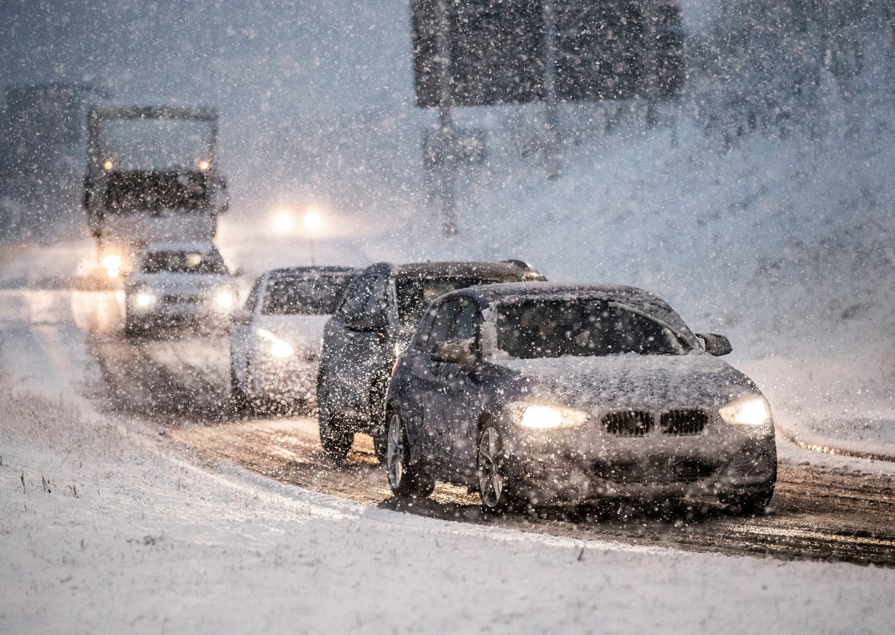

Winter
Winter offers many opportunities that spring, summer, and fall do not. Since snow is required in order to ski, one can only ski in winter. I enjoy skiing, so winter is not a bad thing. However, we have been getting less and less snow as the climate warms up. A "white Christmas," or a Christmas where the whole world is covered in snow, is not very common. One part about winter that I do not like is that the days get shorter and shorter. So, the sun sets much earlier and a larger part of the day is spent in the dark. I do not enjoy this because it is no fun to spend time in the dark. I enjoy sunlight.
winter weather in Canada is:
- cold
- interesting
- dark (the sun is up for much shorter)
- long
- merry
my three favourite things about winter are:
- Christmas
- skiing
- snow (can't ski without snow!)
| Type of Precipitation | Rain | Freezing Rain | Sleet | Hail | Snow |
| Description | Frozen precipitation falling from clouds melts but does not refreeze and hits the ground as water. | Frozen precipitation falling from clouds melts and falls to ground as water, then freezes upon touching surfaces | Frozen precipitation falling from clouds melts into water, then refreezes into a soft, translucent rain-snow mix before hitting the ground. | Frozen precipitation falling from clouds melts, then refreezes into ice pellets before hitting the ground. | Frozen precipitation falling from clouds does not melt or reform in any way and hits the ground as snow. |
| Typical Temperature Range (°C) | >0°C | At or below 0°C | At or below 0°C | Below 0°C | Below 0°C when there is minimal moisture in the air. |
| Images |  |
 |  |  |
Created by: Caleb Chong
Created on: January 22, 2021
Sources:
https://i.pinimg.com/originals/c5/89/fe/c589fe75b84924a0accbb21d1d88c85d.jpg
https://s.w-x.co/util/image/w/en-ca-freezing-rain.jpg?crop=16:9&width=980&format=pjpg&auto=webp&quality=60
https://media.nationalgeographic.org/assets/photos/279/488/d2438b8e-3e2d-4ec8-b0de-2522f2c2e90e.jpg
https://www.insureon.com/-/jssmedia/blog/posts/2019/photo_hail-falling-on-roof.jpg?h=370&iar=0&w=750&rev=6e95eeb8a84547d1a72155220ce76dc5&hash=7B1DC509E0C473CC3E43D0A3C6D42C28
https://metro.co.uk/wp-content/uploads/2020/02/PRI_141653055.jpg?quality=90&strip=all
https://justtwofarmkids.files.wordpress.com/2010/02/trees.jpg
https://cdn.tutsplus.com/psd/uploads/2014/02/NYC_Snowfall.gif
{kind=link}
{kind=link}
{kind=link}
{kind=link}
{kind=link}
{kind=link}
{kind=link}